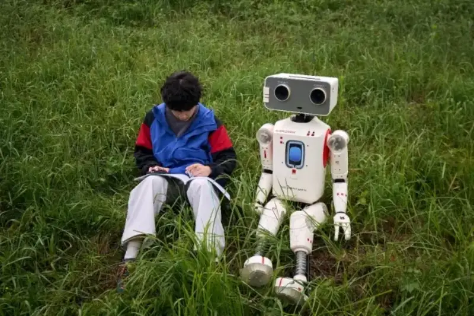
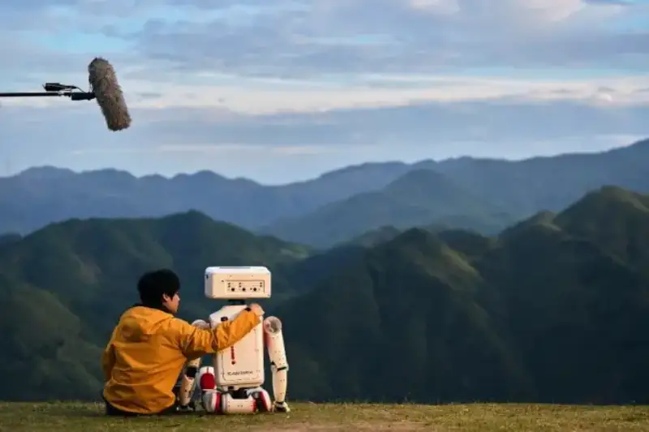
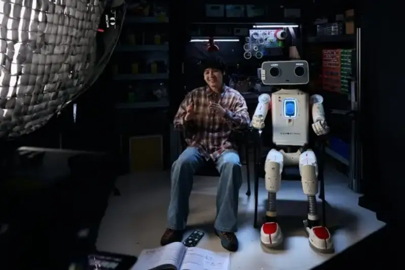
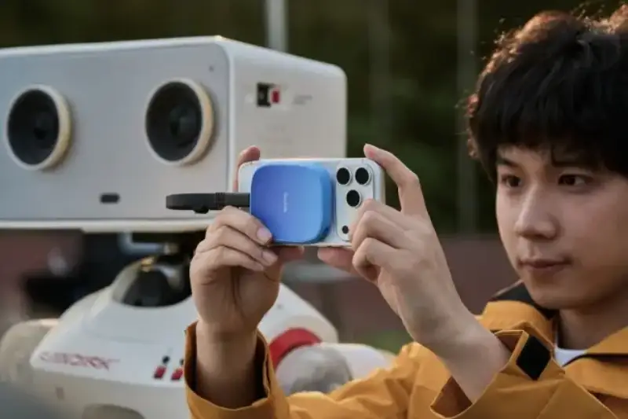
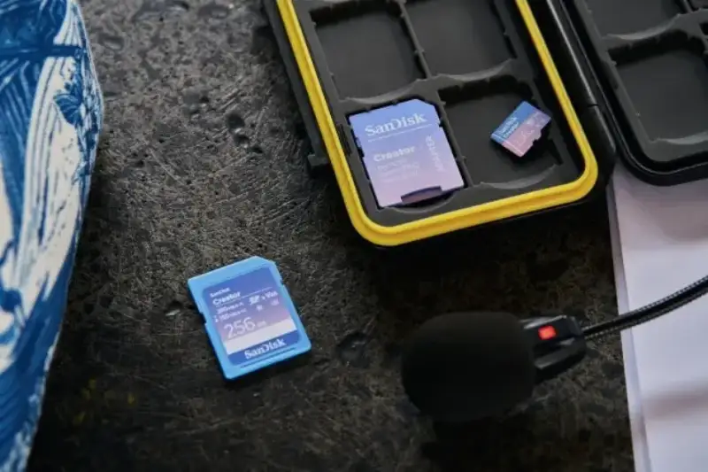
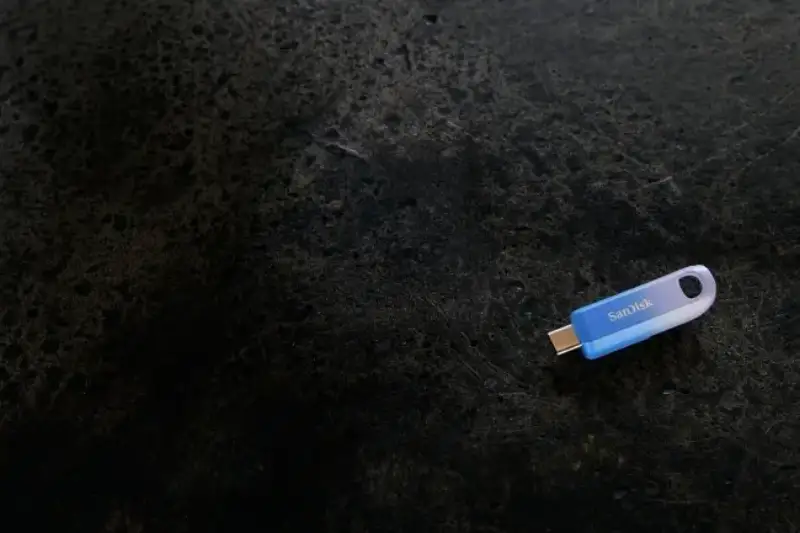

As a content creation partner, Memory ManTMset off on a global journey to betterlearnand support creators' workflows. After visiting the US and Germany, this summer he came to China to join creator@KuisInnerWorld in a new creative journey. Memory ManTM has lively eyes made of high-definition cameras, focused on recording creative details, and learninglearn the creative process of humans day and night. The SanDisk Creator mobile SSD at his heart records and backs up precious footage in stunning ProRes 4K. Memory ManTM carries curiosity about the world and often shows playful thoughts, adding laughter and peace to Kui's busy backstage hours.

Click to see SanDisk®Memory ManTMbehind the scenes @KuisInnerWorld
@KuisInnerWorld has a gift for freezing delicate moments and uses wild expression to stir deep feelings. He always presents the world's wonders with striking visual language. But the creative road is not smooth, and unexpected problems appear: storage suddenly runs low, or inspiration strikes with no time to record. With Memory ManTM beside him, he has a companion, and the creative road gains warmth and peace.

Through Kui's lens, a journey quietly unfolds. To capture special travel memories for his mother, who has limited mobility, he and Memory ManTM travel together across mountains, rivers, and lakes, carefully treasuring the scenery. Memory ManTM is the vessel of these memories, helping him keep a childhood promise to his mother: I will take you to so many places.
Storage products are not just quiet tools. They can strengthen family bonds and treasured moments. Memory ManTM shows the little-known stories between the creative process and the final work. This precious footage also proves that SanDisk and Memory ManTM are key partners in the creative journey.
To make this SanDisk®Memory ManTM co-created short film reach its ideal light, Kui and his team moved between scenes, tried many angles, and gathered a huge amount of footage. Memory ManTM helped a lot. On the first day, as the SanDisk Creator mobile SSD clicked onto his chest, his eyebrows lit up, his eyes focused fast, and Memory ManTM officially started! As Kui's content creation partner, Memory ManTM fits his creativelearn habit: a container that catches inspiration anytime, anywhere, in a shoot full of improvised, fragmented moments. With Memory ManTM aboard, no matter how fast Kui shoots or how much footage he has, he can stick important footage to his chest and store it, so Kui can focus on creating without worrying about running out of space.
In Kui's eyes, Memory ManTM is more like a caring colleague who doubles as cameraman, stabilizer, and footage manager. Through high-definition cameras, he captures real moments beyond the creator's view. Kui always believes the charm of a live shoot lies in unrepeatable, warm memories. AI can generate perfect pixels, but SanDisk and Memory ManTM believe human creativity cannot be replaced. As the journey deepens, Memory ManTM keeps discovering the vast potential and deep meaning of human creativity, and with SanDisk CreatorTM products, works with SanDisk to spark extraordinary human creativity.

Creative video footage records Kui and his team's work. When looking for a partner to stand beside him, Kui chose Memory ManTM and the SanDisk Creator series to fully release the team's creative power. The SanDisk Creator series provides reliable storage for the key steps of a content workflow: shooting, editing, and backup. The one carried on Memory ManTM heart, the SanDisk Creator mobile SSD, has a unique MagSafe-compatible design that fits the back of an iPhone perfectly, with up to 1,000 MB/s1 read and 950 MB/s1 write speeds, and up to 2 TB2 capacity, easily handling on-set framing, footage backup, and reviewing shots.

For this short film, Kui's main camera used the SanDisk Creator SD UHS-II card, in several capacities up to 1 TB,2 holding a full day of HD footage. Its 280 MB/s1 read speed makes high-bitrate shooting smooth. For the secondary action camera and drone, Kui used the SanDisk Creator microSD card, with stable read and write performance and up to 1 TB2 capacity. One main and one secondary SanDisk card make a perfect pair, a dual-card system built for creators on set.

Beyond cards, the other SanDisk Creator products also stand out. The SanDisk Creator Type-C flash drive reaches up to 400 MB/s1 and moves data freely between devices. The SanDisk Creator portable SSD up to 4 TB2 of storage holds the huge footage. With 2,000 MB/s1 read speed, it keeps video editing smooth.

Memory ManTM Carrying SanDisk's understanding and respect for creators, it stands beside each creator and supports their dreams and passion. This is the warmth the SanDisk CreatorTM series wants to pass to every creator. SanDisk will keep you company on your creative journey and light up your wonderful ideas.
You are invited to visit the SanDisk Xiaohongshu、 Weibo and Douyinaccounts, and the social media accounts of creator @KuisInnerWorld, to watch the full short film and behind-the-scenes story, and step into SanDisk®Memory ManTM creative world, and feel the flow of inspiration and the treasuring of memories under warm company.
###
SanDisk, the SanDisk logo, SanDisk Creator, and Memory Man are registered trademarks or trademarks of Western Digital Corporation or its affiliates in the US and/or other countries or regions. iPhone, ProRes, and MagSafe are trademarks of Apple Inc. USB-C is a registered trademark of USB Implementers Forum. The microSD mark and logo are registered trademarks or trademarks of SD-3C, LLC in the US and/or other countries or regions.
© 2026 Western Digital Corporation or its affiliates. All rights reserved.
1 1 MB/s = 1 million bytes per second. Data is based on internal testing. Actual performance varies by host device, use conditions, drive capacity, and other factors.
21 GB = 1 billion bytes, 1 TB = 1 trillion bytes. Actual usable capacity may be lower depending on the operating environment.